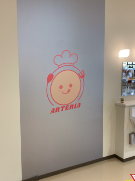
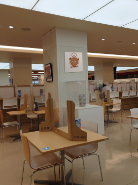
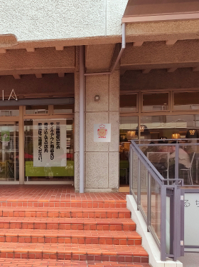
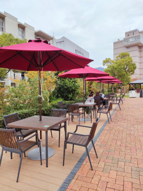
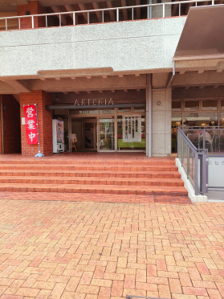
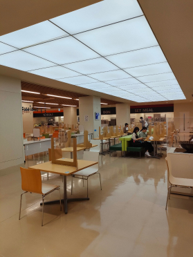
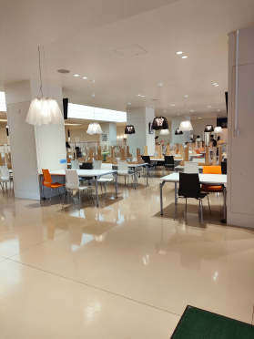
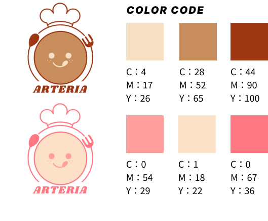
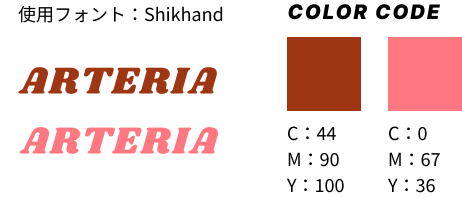

RESEARDH RESULT




GOOD
- 店内画像明るいので安心感があり過ごしやすい
- 店内壁や床が白色なので清潔感がある
- 店内の飾り付けがオシャレ
- プレートを受け取るところに「NOODLE」「SET MEAL」など大きく文字が書いてあってどこで受け取ればいいか分かりやすい
BAD
- 食券機しかなくメニュー表がないので少しわかりづらい
- テーブルヤシ椅子がいろいろな種類のものが使われていて統一感はあまりない
- 店の表の雰囲気と店内の雰囲気が違い、若干違和感がある
COMPARISON
- ほかのお店に比べて目につきやすくお客さんが多い
- お店が少し広いと感じる
SIMBOL MARK

ニコちゃんマークを中心に大きく描くことで可愛らしさをだし、親しみやすくしている
パッと見て飲食店であることが分かるようにスプーンとフォークを描き、ニコちゃんマークを囲うように配置することでお皿を彷彿とさせるデザインにした
ARTERIAの店内の雰囲気は芸術学部生徒の作品もあり美術館のような雰囲気も感じられる。落ち着いた雰囲気を取り入れるため、暖色系の色を取り入れた
LOGOTYPE

シンボルマークに合わせて少しかわいらしく、お店の外観に合うような少しレトロなフォントを使用した
色見は雰囲気を統一させるためシンボルマークでも使用した色を使っている
また遠くから見ても分かるように3色を使っているの中でも彩度の高く、明度の低い色を選んだ